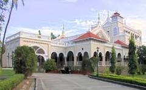
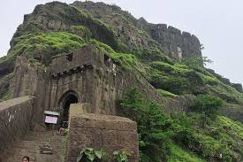

Shaniwar wada

The Shaniwar Wada was normally the seven-story capital building of the Peshwas of the Maratha Empire. It was supposed to be made entirely of stone. However, after the completion of the base floor or the first story, the people of Satara (the national capital) complained to the Chhatrapati Shahu I (Emperor) saying that a stone monument can be sanctioned and built only by the emperor himself and not the Peshwas. Following this, an official letter was written to the Peshwas stating that the remaining building had to be made of brick and not stone.
By 1758, at least a thousand people lived in the fort. In 1773, Narayanrao, who was the fifth and ruling Peshwa then, was murdered by guards on orders of his uncle Raghunathrao and aunt Anandibai. A popular legend has it that Narayanrao's ghost still calls for help on full moon nights. Various people, working around the area, have allegedly reported the cries of "Kaka mala vachava" (Uncle, save me) by Narayanrao Peshwa after his death
Aga Khan Palace

Historically, the palace holds great significance. Mahatma Gandhi, his wife Kasturba Gandhi and his secretary Mahadev Desai were interned in the palace from 9 August 1942 to 6 May 1944, following the launch of Quit India Movement. Kasturba Gandhi and Mahadev Desai died during their captivity period in the palace and have their Samadhis located over there. Mahatma Gandhi and Kasturba Gandhi have their memorials located in the same complex, near Mula river.[5] Legend goes that the Sultan built the palace to provide employment to the famine struck villagers of the surrounding region; so he employed 1000 people, and the palace was constructed in five years. It was built in Rs 12 lakhs. The total area is 7.7 hectares (19 acres) and built up palace covers 2.8 hectares (6.9 acres), and the rest is a well maintained garden.[citation needed]
The palace housed a residential co-education School from 1953 - 72. In 1969, Aga Khan Palace was donated to the Indian people by Aga Khan IV as a mark of respect to Gandhi and his philosophy.[1][2] Today the palace houses a memorial on Gandhi where his ashes were kept. The then prime minister Indira Gandhi had visited the place in 1974 where she allotted a sum of ₹200,000 (US$2,400) every year, for its maintenance. The amount rose to ₹1 million (US$12,000) until the 1990s,[6] after which the national monument of India, was neglected for many years due to improper allocation of funds. There was a protest held at the statue of Mahatma Gandhi near Pune railway station in July 1999 to protest against the worsening condition of the monument. The present condition has improved quite a lot.
Laal Mahal pune

In the year 1630 AD, Shivaji's Father Shahaji, established the Lal Mahal for his wife Jijabai and son.Chhatrapati Shivaji Maharaj stayed here for many years till he captured the first fort. The current Lal Mahal is a reconstruction of the original and located in the center of the Pune city. The original Lal Mahal was built with the idea of rejuvenating the recently razed city of Pune when Shahaji Raje entered the city along with Shivaji and his mother, Maasaheb Jijabai. Young Shivaji grew up here, and stayed in the Lal Mahal till he captured the Torna fort in 1645. Shivaji's marriage with his first wife, Saibai took place in Lal Mahal on 16 May 1640.[2][3]
The Lal Mahal is also famous for an encounter between Shivaji and Shaista Khan where Shivaji cut off four fingers of the latter's when he was trying to escape from the first-floor window of the Lal Mahal.[4] This was part of a surreptitious guerrilla attack on the massive and entrenched Mughal Army that had camped in Pune, with Shaista occupying (possibly symbolically) Shivaji's childhood home. As a punishment for the ignominy of the defeat despite superior numbers and better armed and fed soldiers, Shaista was transferred by the Mughal Emperor Aurangzeb to Bengal.[5]
Towards the end of the 17th Century, the Lal Mahal was ruined by some people and was eventually razed to the ground as a result of various attacks on the city.
The palace housed a residential co-education School from 1953 - 72. In 1969, Aga Khan Palace was donated to the Indian people by Aga Khan IV as a mark of respect to Gandhi and his philosophy.[1][2] Today the palace houses a memorial on Gandhi where his ashes were kept. The then prime minister Indira Gandhi had visited the place in 1974 where she allotted a sum of ₹200,000 (US$2,400) every year, for its maintenance. The amount rose to ₹1 million (US$12,000) until the 1990s,[6] after which the national monument of India, was neglected for many years due to improper allocation of funds. There was a protest held at the statue of Mahatma Gandhi near Pune railway station in July 1999 to protest against the worsening condition of the monument. The present condition has improved quite a lot.
Sinhgad Fort

Some of the information available about the fort, suggests that it could have been built 2000 years ago.[citation needed] The caves and the carvings in the Kaundinyeshwar temple stand as proofs for the same.. Also there is a Gondwana state symbol on the main gate of the fort. It has the sign of lion and elephant as well as fish. The Raj Gondian[citation needed] According to the Deccan sultanates era muslim historian Ferishta, Sinhagad fort was captured from Koli chieftain Nag Nayak in 1340 by the sultan of Delhi, Muhammad bin Tughluq.[5]
The Sinhagad Fort was initially known as "Kondhana" after the sage Kaundinya. The Kaundinyeshwar temple coupled with the caves and carvings indicates that the fort had probably been built around two thousand years ago.
The fort was captured by forces of Muhammad bin Tughluq in 1328 from Koli chieftain Nag Naik after a siege of eight months.[6][7] It then became part of the Bahmani sultanate followed by the Nizam Shahi of Ahmadnagar in 1485. After the fall of Nizam shahi it came under the control of the Adilshahi in early late 1500s.